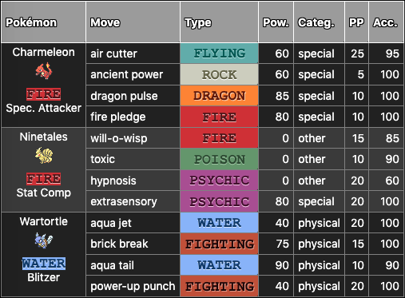
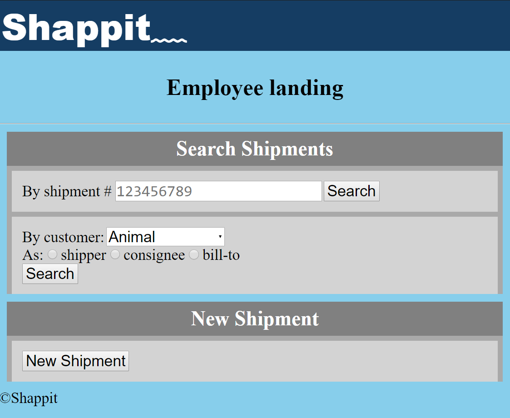

To know me is to know my work. Check out some of my pieces below. View only what you're interested in by filtering by project contents.
List of Works
Pokémon Party Planner
Nintendo's Pokémon franchise has an ultra-popular series of home and mobile games that have had followers young and old for over two decades. Some are content with a casual play style, but there is also a competitive gaming scene wherein a lot of strategy goes into the formation of a team – a so-called party – of six pokémon (wild animal-like creatures who can be captured and trained to take part in battles on the player's behalf).

When you haven't played through the games enough times to know when to use what kind of pokémon, or you want to make side-by-side comparisons of multiple possible party configurations, this app will drastically shorten the length of time you need to do so, while providing all the data you need to make informed strategic decisions.
Their tweet uses #DidTheyForget, but does their voting record match?
Inspired by a speech John Stewart made in front of a largely absent congress in a hearing regarding the Never Forget the Heroes: James Zadroga, Ray Pfeifer, and Luis Alvarez Permanent Authorization of the September 11th Victim Compensation Fund Act; this project surrounds a Twitter account that, upon the click of a button, searches for tweets posted by members of the US congress and which include "#NeverForget" in reference to 9/11. Once found, an automatic response to each tweet is sent containing each respective congressperson's support record for each different past iteration of the finally-passed 9/11 first responders victim compensation bill.
A task management app for business to keep track of the status of all to-do items in a given time frame (as it relates to software development, a "sprint"). On the backend is a MongoDB database, with which the React.js frontend interacts using the Mongoose ORM.
Oftentimes the way shipping organizations are set up makes the user use several different software simultaneously to get a single job complete. The idea behind my app is that shipping should be a one-stop shop, whether the user is an employee or customer of the shipping line.

On the back end I set up a Django app acting as an API with a PostgreSQL database. The front end is an additional decoupled Django app that submits all data changes via said backend API, and displays returned data appropriately using Django Template Language (DTL).